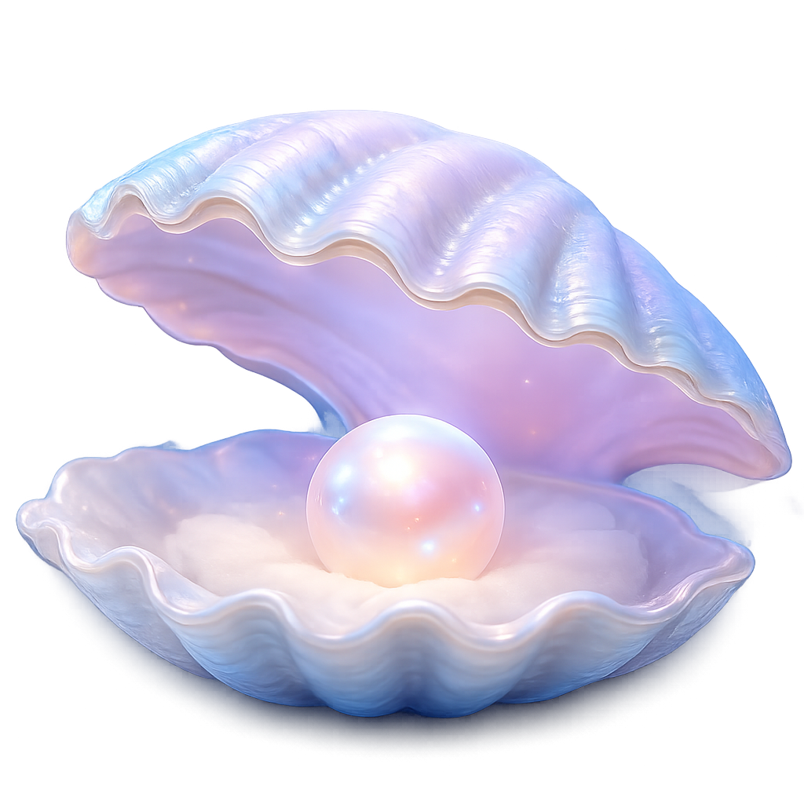

你好，我是 NANA。我们先从你想寻找的名字开始吧。

Namora 布局编辑器
Layout Editor
选择
移动
锚点
网格
吸附
测量
恢复当前点
恢复全部
显示组件：关
复制布局 JSON
下载布局文件
预览
导入布局 JSON
恢复项目默认布局
当前基准：项目默认布局
未保存修改：否
布局来源：assets/config/namora-layout-default.json
布局配置预览
关闭
应用到编辑器
配置 ID
—
配置版本
—
布局校验
—
世界资源
—
站立点
—
NANA 锚点数
—
用户输入组
—
珍珠贝位置
—
输入框位置
—
关系数量
—
未保存修改
—
JSON（只读）
NameAI
Memory
你好，我是 NANA。
今天你想创造怎样的名字？
Message to NANA